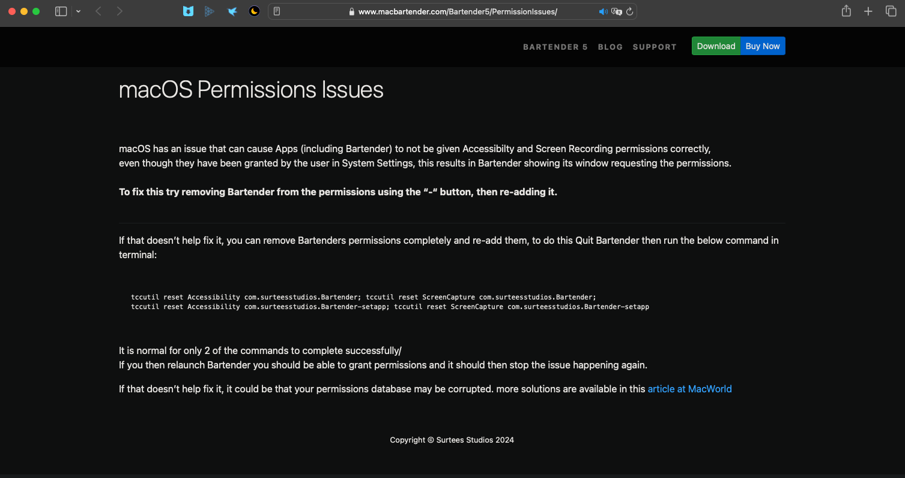

swift
修改于: 2024-03-09官网: https://www.swift.org
官网API文档: https://developer.apple.com/documentation/technologies
官网教程只有英文
一个用于在Apple设备上开发的语言
现在基本是 Object-C 后的接替了
- 安装
Mac上直接安装Xcode就行了, 自带Swift.
其他平台可参考: https://www.swift.org/install/
Swift内置了一个包管理, 能够更简单的导入, 包索引查询: https://swiftpackageindex.com
- 一些网站
- 民间(NGO, Non-Governmental Organization)中文社区: https://swiftgg.team
- 民间Swift语法中文版(相对更新慢一点): https://gitbook.swiftgg.team/swift/
- 民间Swift 基本约定译文: https://github.com/SketchK/the-swift-api-design-guidelines-in-chinese
注解
swift 坑比较多, 资料也比较少...
打算做一个快捷键的, 东西太少
找到个可以借鉴的项目: git clone https://github.com/tkgka/Switcher.git
git地址: https://github.com/tkgka/Switcher
注解
国内NGO就是社会组织
访问C头文件的几种方式
备注
对于macOS
要使App全局显示, 只有设置 Info 为 Application is agent (UIElement), 比如显示在其他全屏App上.
这是用其他语言暂时无法实现的...
单独的 Swift-View 如果要作为一个弹出窗体, 需要转换为 NSWindow
对于单独的 NSWindow, 直接给 delegate 会存在问题...
有个一直未解决的问题, 本地构建的App, 重新构建后, 识别不了上个版本获取的权限, 比如辅助功能...
某段时间一度以为是APP需要签名(证书签名)的问题, 直到后面看到 macbartender 的说明 https://www.macbartender.com/Bartender5/PermissionIssues/ ,
他们的意思是这是macOS的bug, 需要先手动删除上次的再加权限才行.
不过也可以试一下正确签名, 说不定能解决, 因为有某次的一个包就是签名了一只没遇到此问题
swift package manager fetch慢
也就是项目拉取依赖包的时候慢, 关键时还找不到在哪重试, 可以先去命令行项目根目录下执行
xcodebuild -resolvePackageDependencies -scmProvider system
来手动拉依赖, 执行成功后再看xcode